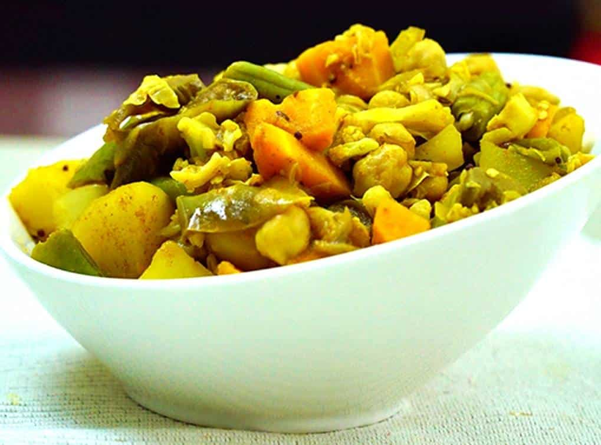

Ingredients:
- 200 gms Cashew Nuts (raw, unroasted)
- 50 gms Eggplant
- 50 gms Jackfruit Seeds
- 50 gms Runner Beans
- 50 gms Sweet Potato
- 50 gms Pumpkin
- 50 gms Ratala (Baby Potatoes)
- 50 gms Ash Plantain
- 50 gms Carrot
- 1/2 tsp Turmeric
- 1 tsp Chilli Powder (unroasted)
- 1 tbsp Thuna Paha (local spice mix, unroasted)
- Salt to taste
- 20 gms Red Onions
- 20 gms Green Chilli
- 10 gms Curry Leaves
- 1 cup Coconut Milk (thick cream and diluted)
- 1 cup Water
Instructions:
- Clean and soak cashew nuts for a few hours. Chop the peeled jack seeds and set aside.
- Cut eggplant, runner beans, sweet potatoes, pumpkin, ratala, ash plantain, and carrot into dice.
- In a clay pot, combine onions, garlic, green chili, water, and all the spices. Add soaked cashew nuts and jack seeds. Cook for a few minutes.
- Add long beans, pumpkin, ash plantains with the first extract of coconut milk. Cook until vegetables are done.
- Once the vegetables are cooked, smash the jack seeds with a spoon and mix well.
- Optional: Add mustard seeds according to your preference.